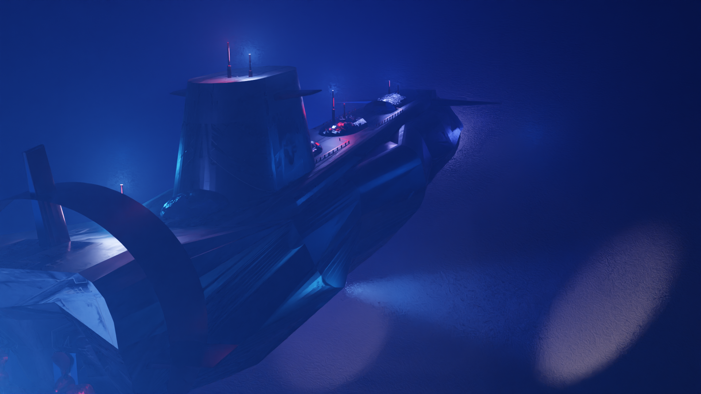
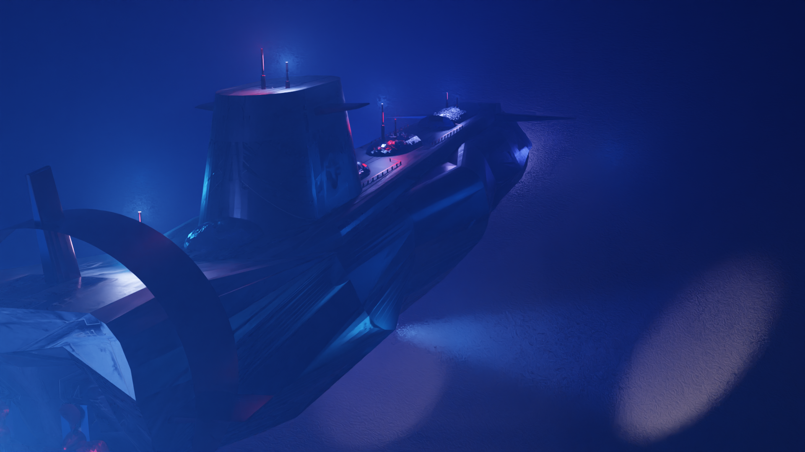

In this course we got to work with the popular 3d-moddeling application Blender, and the game engine Unity. To prepare for this course I
followed a beginners guide for blender. I already had used Unity in the past before, so I was well prepared
for this course! Every week there was a new assignement for this course, for example to model a japanese temple in blender.
I improved my Blender and unity skills with this course. This is what I made for the weekly assignments:
A big assignmend was to make a japenese house, complete with furniture. After I made this house in Blender you had to place it in a Unity environment where the player could walk around the house. I also added a animation for sliding doors in Unity.
After these "pratice" assignments, it was time for the real deal. For the final assignment of this course we needed to make a very good blender render
of what ever we want! This freedom was something new, for the weekly assignments the instructions were already given, but in this assignment you could
choose any object to make.
I chose to make a submarine, and i think it worked out really well:
 

Or rusty:
I also made an animation, which is unfortunately low quality because rendering would take too long otherwise!